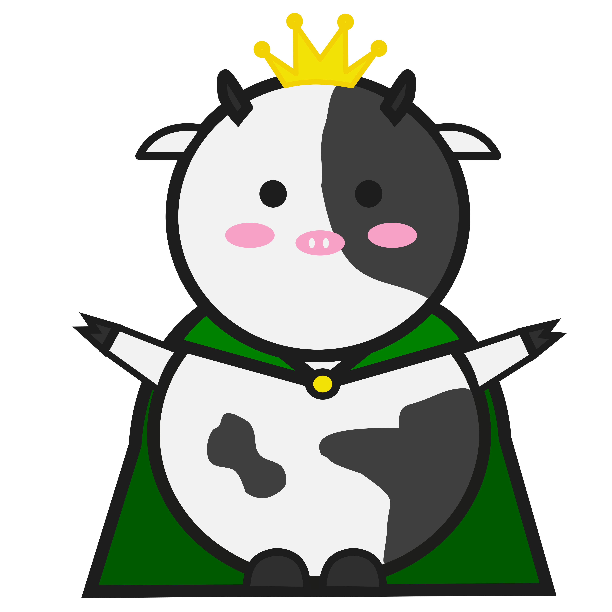

Nuestro proyecto se basa en saber la cantidad de CO2 que producimos y cuánto podemos ahorrar de un mes a otro. Gracias a esto, podemos contribuir en uno de los objetivos
que plantea la ODS en el cual intentamos cumplir los siguientes objetivos:
+Info
Nuestro objetivo es concienciar tanto a las personas, colegios y empresas a reducir las emisiones de CO2.
Ya que gracias a CalculadO2, llegarán a ser conscientes de la cantidad de CO2 que generan y a su vez cuánto llegan a ahorrar al mes. Poco a poco podrán ir reduciendo la cuantía e ir observando mes a mes cuánto han mejorado.
La vaca Letrán es el logo oficial de nuestra web. Este animal no ha sido seleccionado aleatoriamente, sino por una razón específica.
